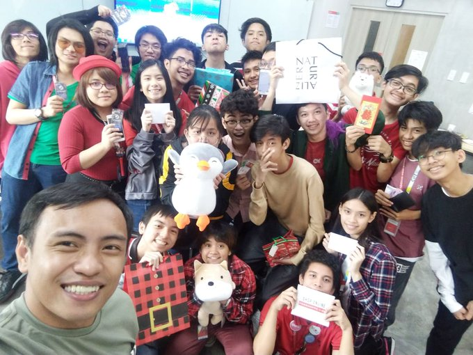
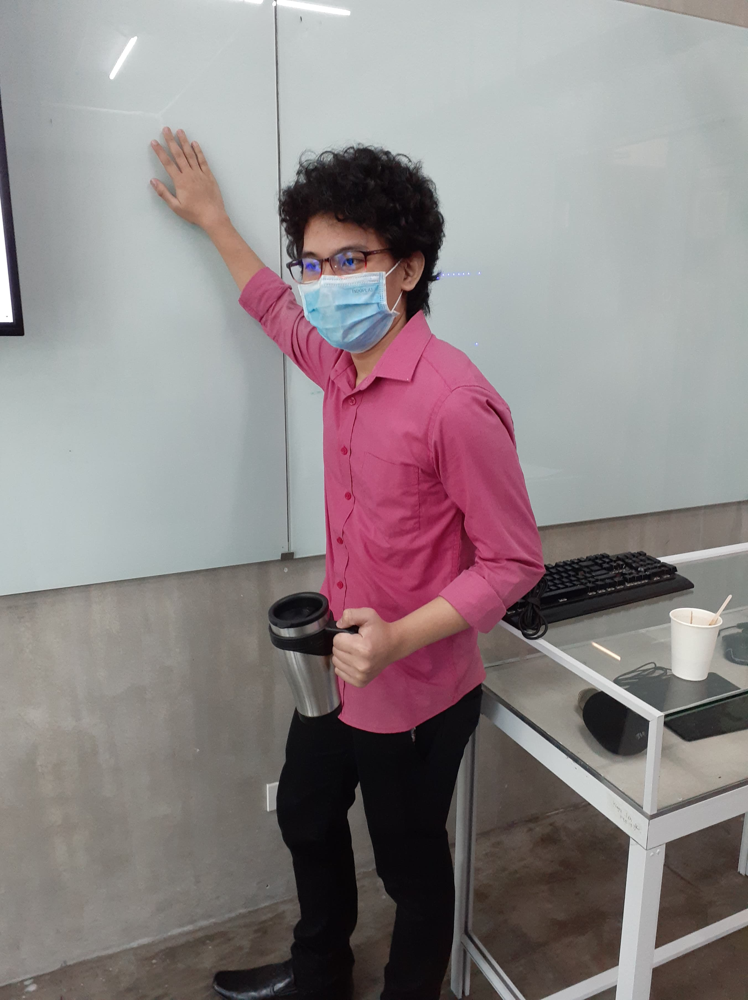

I am Ron Vincent Henri Sison, the creator of this website. I am currently 16 years old turning 17 on March 28 this year. I'm a grade 11 programming student studying in CIIT SHS. I live in Concepcion Uno, Marikina City. When you meet me for the first time you would think that I'm a quiet person, but that will change once you know me. The reason why I choose Programming as my strand / course is that, I want to be a game developer in the future. For me, creating games and knowing that the players are having fun on the game I created is joy since I have spread happiness and joy into their lives, even if it's for a short while.
 - Playing Video Games
- Playing Volleyball
- Watching Anime
- Reading Manga
- Listening to Music
- Eating and Sleeping
- Persona 3,4,5
- Tekken 7
- osu!
- Ace Attorney Series
- Pokemon
- Bang Dream! Girls Band Party!